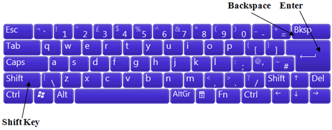

Free
computer Tutorials
|
Free
computer Tutorials
|
|
 home home |
|
||||
Microsoft Word 2007 to 2010
Your First LetterHave a look at the blank page on your screen, all that white space. The first thing to notice is the flashing vertical line. This is called the Cursor, or the Insertion Point. Its normal behaviour is to flash on and off. The cursor is where all the action takes place. Try touching one or two of the letter keys on your computer keyboard and watch what happens. You should see the vertical line, the cursor, move to the right. Your letters will appear to the left of the cursor. In other words, when you tap a letter on your keyboard, the letter will appear where the cursor is. The cursor will move across, ready for the next thing you type. Before we start typing the letter below, there are three keys on your keyboard that might come in very handy: the Backspace key, the Enter key, and the Shift key.  If you have made a spelling mistake, tap the backspace key to get rid of your unwanted characters. You can also click the Undo icon right at the top of Word. Here's what the Undo feature looks like Word 2007:
In Word 2010 it will look like this:
To get a new paragraph, press the Enter key on your keyboard. You cursor will move down one line to the start of the new paragraph. The Shift key is held down if you want uppercase characters (capital letters). Keep the Shift key held down then press a letter. It will then be a capital letter. You also need to hold the Shift key down to get any of the characters on top of another key. For example, to type an ampersand character ( & ) hold down your Shift key. Keep it held down and press the number 7 (on a UK keyboard).
So, time for your first letter. Type the following onto your new white page. Type it in exactly as it is, spelling mistakes included. (You don't have to make your text bold, though):
Dear Sir or Madam, It has come to my attention that our local counsil has decided to close down our one and only libary. While it is true that no new books have been bought for seven years £12.50 was recently raised in a local raffle. This is nearly enough for an entire Delia Smith! Do you not think that your decicion is a little premature? Yours truly Mr Irate
Ok, you can stop typing now. You've finished. So, how did you get on? There's a good chance that you needed to use the backspace key a few times. And finding keys like the pound sign and the exclamation point might have took you more time than you would have liked. But this is usual when you are first starting out: it will come. Before we get on to those spelling mistakes, let's learn how to save
your work. Saving your Work in Word 2007/2010 --> <--Back to the Word Contents Page View all our Home Study Computer Courses
|
|||||
|